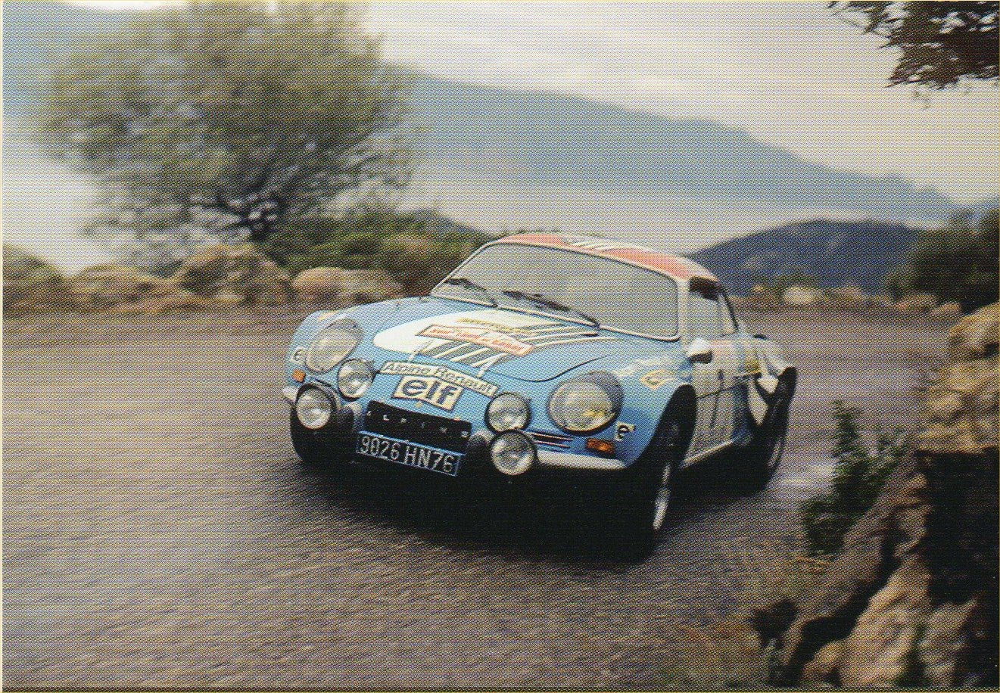
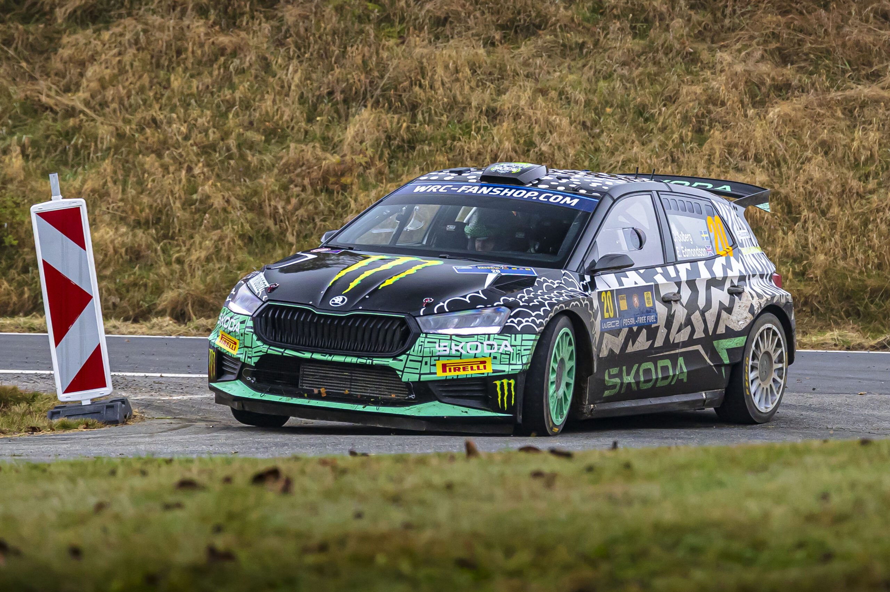
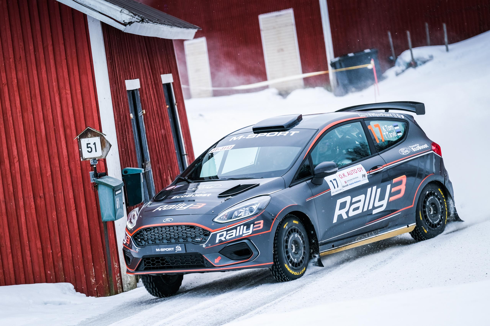

Established in 1973, the WRC is an epic battle against the elements and the clock. It is spread across multiple rallies covering four continents and 14 countries.
Man and machine must master everything from snow-packed forest tracks in intense cold, to rock-strewn mountain passes in blistering heat.

Categories
WRC is the main championship category, WRC2 and WRC3 are support championship categories. Junior WRC is contested on selected events of the FIA World Rally Championship calendar.

Skoda Fabia Rally2 WRC2

Ford Fiesta Rally3 WRC3
How a Rally Works
Each rally features a number (typically between 15 and 25) of timed sections - known as special stages - on closed roads.
Drivers battle one at a time to complete these stages as quickly as possible, with timing taken to 1/10th second. A co-driver reads detailed pace notes that explain the hazards ahead.
Competitors drive to and from each stage on public roads, observing normal traffic regulations. The crew which completes all the stages in the shortest cumulative time is the rally winner.